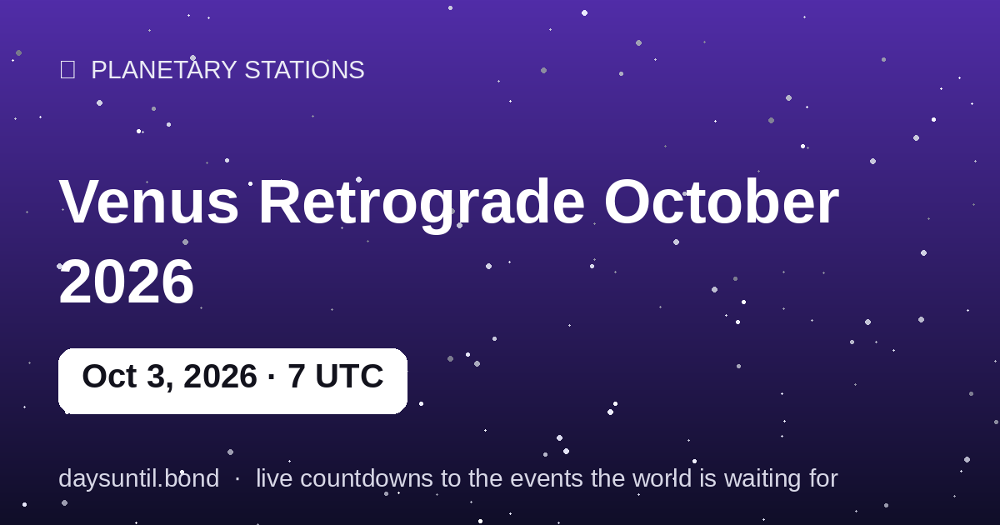

How Many Days Until Venus Retrograde October 2026?
Venus Retrograde October 2026 falls on Saturday, October 3, 2026.

Quick facts
| Station moment (UTC) | October 03, 2026 · 07:37 |
|---|---|
| Zodiac position | 8°29' Scorpio |
| Direction | Turning Rx |
| Duration of phase | ~6 weeks |
About Venus Retrograde October 2026
Venus stations retrograde on October 03, 2026 at 07:37 UTC, at 8°29' Scorpio — computed to the minute with our own Keplerian ephemeris.
Venus retrograde is the rare six-week audit of love, money and values — it comes only every 18 months. The station is the turning point itself: the day the planet's apparent motion reaches zero before reversing. In tradition, days around a station carry the event's themes most intensely — decisions made at a station are said to set the tone for the whole season that follows. Full guide with a free chart checker: the Venus retrograde guide on Prophetic.
This one has already passed
Venus Retrograde October 2026 fell on Saturday, October 3, 2026 — a Saturday — which is 56 days ago. The countdown on this page now counts up rather than down, and the date is kept because people look it up after the fact as often as before it.